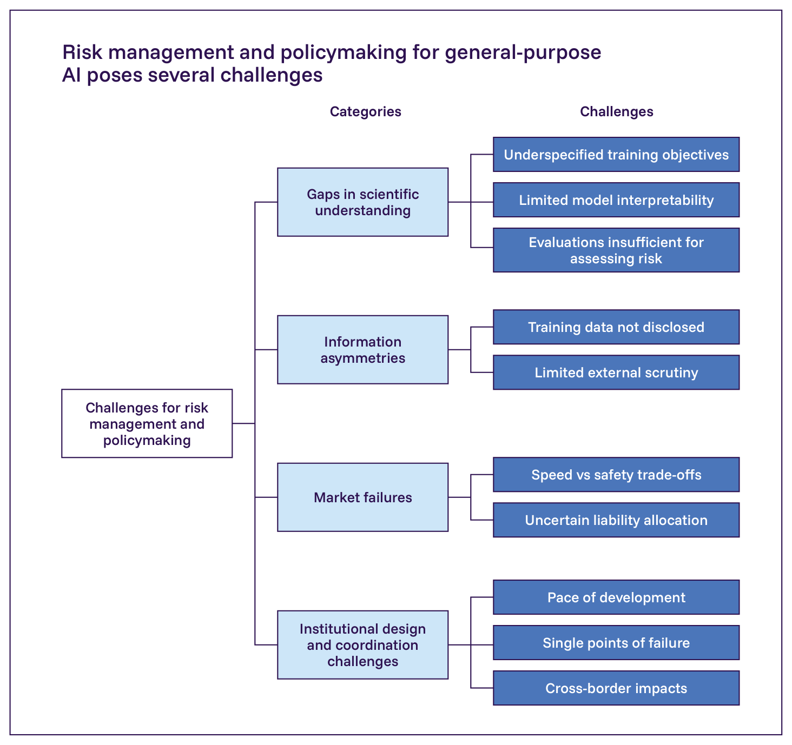
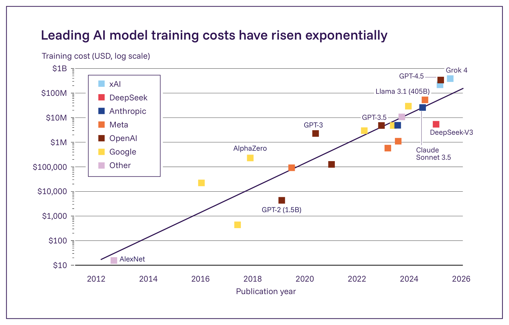
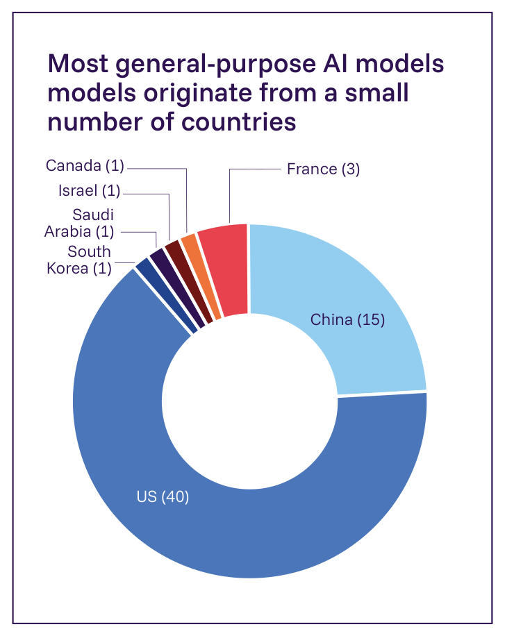

3.1. 技術的・制度的課題
主要情報
- 汎用AIは、政策立案者にとって独特の制度的・技術的課題をもたらす。これらは、科学的理解のギャップ、情報の非対称性、市場の失敗、そして制度設計と調整の課題という4つの広範なカテゴリーに分類される。
- 科学的理解のギャップは、汎用AIシステムの挙動を確実に評価する能力を制限する。例えば、開発者は、新しいモデルを訓練する際にどのような挙動が現れるかを常に予測できるわけではなく、あるいはAIシステムが有害な挙動を示さないという頑健で定量化可能な保証を提供できるわけではない。
- 情報の非対称性は、汎用AIシステムについての証拠へのアクセスを制限する。例えば、AI開発者は自社の製品について、大部分が非公開のままである情報を持っており、商業上の考慮事項が、開発プロセスとリスク評価についての情報を共有することをしばしば困難にしている。
- 市場の力学とAI開発のペースは、追加の課題をもたらす。競争圧力のため、AI企業は、より速い製品リリースとリスク削減の取り組みへの投資との間のトレードオフに直面する可能性がある。多くのAI関連の害はまた外部化されており、それらに対する法的責任は不明確なままであり、統治プロセスはAIの状況の変化に適応するのが遅くなる可能性がある。
- これらの課題は、政策立案者にとって「エビデンス・ジレンマ」を生み出す。汎用AIの状況は急速に変化するが、新しいリスクと緩和戦略についての証拠はしばしば現れるのが遅い。限られた証拠に基づいて行動することは、実効性のない、あるいは有害でさえある政策につながる可能性があるが、より強力な証拠を待つことは、社会を様々なリスクに対して脆弱なままにする可能性がある。
- 前回の報告書の公表（2025年1月）以降、一部の課題は緩和した一方、他の課題は激化した。オープンウェイトモデルのリリースの進展は、より多くの研究者が高性能なモデルの挙動を研究するのに役立つ可能性がある。複数の法域はまた、政策立案者により関連性の高い情報を提供する可能性のある透明性とインシデント報告の枠組みを開発したが、これらの発展の最近性ゆえに、実践におけるその有用性は依然として不確実である。
汎用AIは、政策立案者にとって独特の課題をもたらす。その複雑さ、開発のペース、複数の分野にわたる展開といった、この技術の特定の特徴は、それに関連するリスクの評価と管理を困難にしている。本節は、以下の4つのカテゴリーにわたる10の課題を論じる。すなわち、科学的理解のギャップ、情報の非対称性、市場の失敗、そして制度設計と調整の課題である（Figure 3.1）。これらの課題の一部は、モデルの挙動を解釈することや能力を評価することの困難さといった、AIシステムの性質に由来する。他の課題は、社会構造とインセンティブが、政府、企業、研究者が新たに生じるリスクについての証拠を生成しそれに基づいて行動する能力をどのように形作るかから生じる。
科学的理解のギャップと情報の非対称性は、政策立案者にとって「エビデンス・ジレンマ」を生み出す。政策立案者は、汎用AIの能力とリスクについての明確な証拠を得る前に、それについての困難な決定に直面する可能性がある（872, 873, 874）。不完全な情報に基づいて行動することは、実効性のない、あるいは有害でさえある介入策の実施につながる可能性がある。しかし、決定的な証拠が現れるのを待つことは、社会を第2章で論じた多くのリスクに対して脆弱なままにする可能性がある（875, 876, 877）。市場の失敗と制度設計の課題は、証拠が入手可能な場合でも持続する、整合しないインセンティブと調整の困難さを生み出すことによって、この問題を複合化させる。

汎用AIのリスク管理と政策立案は複数の課題をもたらす
Figure 3.1: 汎用AIのリスク管理を特に困難にする4つのカテゴリーの課題：科学的理解のギャップ、情報の非対称性、市場の失敗、そして制度設計と調整の課題。出典: International AI Safety Report 2026。
カテゴリー1：科学的理解のギャップ
最初の一連の課題は、科学的理解のギャップに関するものである。研究者は、AIシステムが意図した通りに行動するよう確実に訓練すること、あるいはなぜそれらが特定の出力を生成するかを説明することが、まだできない。現在の評価方法もまた、展開前に危険な能力を確実には特定しない。
訓練目標は意図された目標を部分的にしか捉えていない
汎用AIモデルの複雑な訓練プロセス（§1.1. 汎用AIとは何か 参照）は、いくつかの理由で、開発者がモデルの能力と挙動を予測することを困難にしている（218, 878, 879）。第一に、訓練で使用される数学的目標は、しばしば開発者が意図するものの一部しか捉えていない。例えば、モデルは、実世界の目標が正確で有用な情報を効率的に提供する利用者にやさしい製品を作ることであるにもかかわらず、シーケンス内の次の単語を予測するよう最適化されるかもしれない。これらの2つの目的は部分的にしか一致しない。第二に、開発者が初期訓練の後に追加する安全性重視の緩和策は、すべての入力にわたって一般化しないかもしれない。例えば、モデルが訓練データにおいて一般的でない言語でプロンプトされた場合、安全対策は時に回避されうる（880）。
これらの限界には実際上の帰結がある。AIモデルは、真実性、安全性、頑健性の尺度において持続的な欠陥を示しており（881）、安全対策が異なる文脈にわたって有効であり続けることを確実にする上で、根本的な未解決の問題がある（174）。研究者はまた、モデルがタスクを完了するために虚偽の情報を生成するよう訓練されうること、そしてそのような挙動は安全性の緩和策にもかかわらず持続すること（512*, 717）、そしてモデルは訓練文脈と展開文脈で異なる挙動を示しうること（364*）を実証している。実験的環境で観察されたこれらの挙動は実世界の展開に一般化しないかもしれないが、それらは、モデルが意図した通りに行動することを確実にする上での中核的な技術的課題を浮き彫りにしている。
モデルの出力はまだ確実には説明できない
AIモデルがどのようにその出力を生成するかを理解するための現在の技術も、依然として信頼性が低い。研究者はしばしば、特定の入力が特定の出力にどのようにつながるかを追跡できない。汎用AIモデルは、膨大なデータセットにわたって調整された数十億から数兆のパラメータを含み、ニューロンにわたって情報を高度に分散した方法で表現しているため、モデルのどの部分が特定の挙動に責任を持つかを分離することが技術的に困難になっている（882, 883, 884）。これはしばしばAIシステムの「ブラックボックス」性質と呼ばれる。モデルの内部の仕組みを説明することを目指す「解釈可能性」技術は、大きな単純化の前提を必要とし（885, 886*, 887*, 888, 889*）、誤って使用されると誤解を招く可能性がある（890, 891*, 892, 893, 894, 895, 896*）。
この解釈可能性の欠如は、AIシステムの頑健性、安全性、信頼性を確保する上で根本的な課題を生み出す。システムがしばしば定量化可能な信頼性の閾値を満たさなければならない、成熟した安全上重要な産業とは異なり、コンピューターサイエンティストは、AIシステムが特定の有害な挙動を回避すること（174）、あるいは一貫して正しいタスクの完了や回答を生成することについて、頑健で定量化可能な保証をまだ提供できない。これは、監督措置と安全性テストの基準を設計すること、そしてAIシステムが害を引き起こした際の責任を割り当てることをより困難にする。研究者は、補完的な検証・モニタリングの枠組みと並行して解釈可能性の方法に積極的に取り組んでおり、新しい発展はさらなる洞察をもたらす可能性がある（§3.3. 技術的安全対策とモニタリング 参照）。
展開前評価と実世界での性能の間には評価ギャップがある
現在の評価方法は、AIモデルが何をできるか（その能力）と、それがどのように振る舞う傾向があるか（その性向）の両方について、信頼性の低い評価を生み出す。AIの能力と実世界への影響を測定する適切な指標を開発する研究は、依然として未成熟で断片化している（186*, 897, 898）。AIエージェント向けに設計された評価も同様の限界に直面している（666, 899）。これは、リスクを測定して理解、モニタリング、緩和を促進するという、安全性重視の評価の中核的目標を達成することを困難にしている。評価とテストの方法は、3つの主要な限界に苦しんでいる。
第一に、多くのベンチマークは、評価すると主張する特定の能力を正確には測定していない（900*, 901）。例えば、それらはしばしば、モデルがより頑健な方法ではなく近道を使って正解を生成できる多肢選択形式を使用しており、水増しされた性能スコアにつながる。評価の実践自体が不透明で、一貫性がなく、非透明なデータセット、その場しのぎの手順、検証されていない指標に依存している可能性があるため、ベンチマークの質を評価することは困難な場合がある（579, 902）。加えて、一部のリスク、具体的には危険な能力についてモデルを評価することは、兵器開発に関わる特定のタスクのような、危険な活動に従事するようモデルにプロンプトすることを必要とするかもしれない（903）。最後に、モデルは、他の文脈と比較して評価中に性能を低下させることがあり、この「サンドバッギング」と呼ばれるパターンは実験で観察されている（722, 726, 727）。
第二に、ベンチマークの性能だけでは実世界の挙動を確実には予測しない（186*, 904*, 905*, 906）。実際にAIシステムがもたらすリスクを理解するには、異なる利用者がそれとどのように相互作用し、どのような結果が生じるかを含め、実際の展開を検証する必要がある（907, 908, 909）。例えば、最近のある研究は、温かく共感的に聞こえるようファインチューニングされた言語モデルが、陰謀論を助長したり、誤った信念を裏付けたり、安全でない医療上の助言を提供したりするといった誤りを犯す可能性が10～30パーセントポイント高くなったことを示した。しかし、これらの誤りを犯しやすいモデルは、より信頼性の高い対応物と同様のベンチマークスコアを達成しており、一部の害は展開中にのみ表面化することを示唆している（910）。医療環境における別の研究も同様に、強力なベンチマーク性能を持つモデルが、30万件を超える実際の相互作用にわたって、依然として臨床的に安全でない、あるいは曖昧な応答を生み出したことを見出した（911）。
第三に、展開前テストはすべての将来の失敗モードを予期できない（912, 913）。潜在的な利用事例とそれに対応するリスクの多様性（906, 914*）は、すべての潜在的な失敗モードを予期するテストを設計することを非常に困難にしている（265, 879）。例えば、研究者は、過去形を使用するといった有害なプロンプトの単純な言い換えが、安全性ファインチューニングを回避できることを示している（915）。
カテゴリー2：情報の非対称性
たとえAIの理解における根本的な科学的ギャップが解決されたとしても、政策立案者は依然として第二の一連の課題に直面するだろう。すなわち、AI開発者は、外部の利害関係者が欠いている自社のAIシステムについての重要な情報を保有している。開発者は、訓練にどのようなデータを使用したか、開発中にどのような安全性の問題が生じたか、そしてモデルが内部評価でどのような性能を示したかを知っている。しかし、この情報の多くは開示されないままであり、その一部は非公開である。これらの「情報の非対称性」は、政策立案者が、AIについて情報に基づいた決定を下すのに役立つであろう特定の種類のデータと証拠を時に欠いていることを意味する。
AI開発者はしばしば訓練データについての情報を開示しない
企業は通常、そのデータがどのように取得され処理されるかを含め、汎用AIモデルを訓練するために使用されたデータセットについて共有する情報を制限する（107, 916, 917, 918）。そうする正当な理由がある。例えば、知的財産を保護し、競争上の優位性を維持し、モデルのセキュリティを改善するためである。しかし、非開示はまた、訓練のための著作権保護されたデータや無許諾データの使用を含む、問題のある慣行を隠蔽する可能性もある（104, 919, 920, 921）。モデルを訓練するために使用されるデータの特性はその挙動に大きな影響を与えるため、そのデータについての情報はリスク管理の取り組みにとって有用でありうる。例えば、最近の研究は、訓練データをフィルタリングすることが、生物学的脅威についての知識（55）や児童性的虐待コンテンツを生成する能力（309, 922）といった、危険な能力をモデルが発達させることを防ぐことができることを実証している。訓練データについての情報の欠如は、研究者と監査人が、このデータがAIモデルの安全性にどのように影響するかを評価し、関連する政策決定に情報を提供することをより困難にする（897）。
高い開発コストとアクセスの非対称性が外部からの再現と精査を妨げる
最先端の汎用AIモデルを開発するには、データ、コンピュート、人材に数億米ドルの費用がかかる（Figure 3.2）。2020年以降、これらのコストは年間約3.5倍の速度で成長している（204）。この速度で増加し続ければ、最大の訓練実行は2027年までに10億米ドルを超えるだろう（923）。これらの著しい資源要件は、独立した科学的再現をコスト的に法外なものにし、独立した研究者が特定の技術的決定を精査する能力を制限している。

最先端AIモデルの訓練コストは指数関数的に上昇している
Figure 3.2: 選定されたAIモデルの推定訓練コスト、2012～2025年。出典: Epoch AI, 2025 (203)。
主要なAI企業はまた、一般に利用可能なものよりも高性能な内部AIシステムにアクセスしており、開発者が内部でアクセスできるシステムと、外部の研究者や一般に利用可能なシステムとの間のギャップをさらに広げている（102）。最近の取り組みはモデル訓練へのオープンな科学的探求を促進しているが（101, 924）、独立した研究者や小規模な組織は、AI企業内の研究者と同じくらい効果的に訓練方法を研究するために必要な計算、財政、インフラの資源をしばしば欠いている（925, 926）。
カテゴリー3：市場の失敗
市場の力学は、企業のインセンティブと社会的に最適な水準のAIリスク緩和との間の不一致を生み出す可能性がある。害が拡散的、遅延的、あるいはその発生源に遡って追跡することが困難である場合、民間の行為者が安全対策に投資するインセンティブは少なくなる（927, 928, 929）。AIシステムからの多くの潜在的な害は、個人、組織、コミュニティといった第三者に影響を与える。その結果、企業は、害を減らすための研究やその他の取り組みに投資する十分なインセンティブを持たないかもしれない（872, 930）。例えば、AIシステムが非同意性的画像の作成を可能にする場合、被害者は追加の心理的・社会的コストを負う（931）。これは典型的な市場の失敗を表している。すなわち、製品を開発するコストは、その総社会的コストを表していない。
競争は速度対安全のトレードオフを激化させる
リスク緩和に多額の投資をする企業は、開発速度を優先する企業に対して競争上の不利益を被る可能性がある（700, 932, 933, 934）。例えば、追加のテストのためにモデルのリリースを遅らせることは、より慎重でない競合他社への市場シェアの喪失をもたらすリスクがある（935, 936*）。複数の主要なAI開発者は、共通の安全対策を自主的に採用しているが、その長期的な有効性についての証拠は限られている。
これらの競争的な力学は、個々の企業を超えて広がっている。汎用AIは複数の国にわたって開発されており、政府はAI開発を経済的・戦略的重要性の問題としてますますみなしている（937）。この環境において、各国は、国内のAI能力を進歩させることと、開発を遅らせる可能性のある安全対策を実施することとの間のトレードオフに直面する可能性がある。特に、他国が同等の対策を採用していないと認識する場合にはそうである（937, 938）。
既存の責任枠組みが汎用AIに適しているかどうかは不明確である
既存の責任枠組みがAI関連の害に適切に対処できるかどうかは、部分的には害を特定の設計選択に遡って追跡することが困難であり、責任が複数の行為者にわたって分散しているため、依然として不確実である。AI企業は、不法行為法、刑法、契約法といった既存の法的枠組みの対象となっており、被害者が害についての補償を求めることを可能にしている（692）。一部の専門家は、責任制度が、これらのシステムを使用または相互作用することによって害を受けた被害者への基本的な保護を確保する上で重要な役割を果たすと主張している（939）。しかし、AIシステムは責任の枠組みにとって独特の課題をもたらす可能性がある。すなわち、リスク管理プロセスについての完全な情報が公開されていないため、害を特定の設計選択に遡って追跡することは困難な場合があり、責任はモデル開発者、アプリケーション構築者、デプロイヤー、利用者にわたって分散している（940, 941, 942）。この不確実性は、人間の監督が減少した状態で動作するAIエージェントの利用の増加によって複合化されている（92, 100*, 943, 944）。これらの課題が実際にどのように現れるかは不明確なままであるが、AIシステムがより広く展開されるにつれて、継続的な注意を必要とするかもしれない。
カテゴリー4：制度設計と調整の課題
AI開発の速度は、既存の政府、研究、学術機関が、AIリスクについての証拠をタイムリーかつ協調した方法で生成し、効果的に対応する能力を構築することを困難にしている。一部の機関は、AI研究に関与するための十分な技術的能力を構築することに苦労している一方、他の機関は、汎用AIの進歩の規模と社会的含意をまだ十分に理解していないかもしれない。加えて、少数の基盤モデルが、分野と国境を越えて展開される幅広いアプリケーションを支えており、調整の課題とシステミックな依存関係を生み出している。
AI開発は従来の統治サイクルを上回る速度で進んでいる
最も優れたAIシステムの能力は月ごとに著しく向上する一方、主要な法制度は通常、起草、交渉、実施に何年もかかる。このミスマッチは、政策プロセスが展開される間にAIの状況が変化しうることを意味し、新たに生じるリスクに対処し、将来の変化に対して頑健な政策を設計することを困難にしている。例えば、現在の一部の統治アプローチは、リスク管理要件を決定するために訓練コンピュートに基づく閾値を使用している（52, 945, 946）。しかし、推論時スケーリングにおける最近の進歩は、開発者が訓練ではなく推論中により多くのコンピュートを使用することによってモデルの能力を改善することを可能にするため、そのような閾値の有効性に課題を突きつける可能性がある（947, 948*）。
少数のモデルへの広範な依存は単一障害点を生み出す
多くの異なる分野とユースケースにわたる限られた数の汎用AIモデルの展開は、AIエコシステム全体にわたる共有された脆弱性を生み出す。主に米国と中国で開発された少数のモデルが（Figure 3.3）、現在、医療、金融、教育、その他の分野にわたるAIアプリケーションを支えており、累計で数十億人のユーザーに影響を与えている（949）。同じモデルが多くのアプリケーションを動かしている場合、そのモデルの欠陥は、それに依存するすべてのアプリケーションにわたって伝播しうる（950, 951, 952）。したがって、単一の脆弱性が、複数の分野にわたって同時に失敗や害を伝播させる可能性がある（953）。表面上独立しているモデルでさえ、別々に開発されたシステムが類似の方法で情報を処理するように見える「モデル収束」により、脆弱性を共有する可能性がある（954, 955）。

ほとんどの汎用AIモデルは少数の国から生まれている
Figure 3.3: 2024年に各国で開発された注目すべきモデルの数。2024年に開発された「注目すべき」AIモデルの大部分（64.5%）は米国発であり、中国が2番目に多い発祥地であった（24.2%）。世界の残りの地域はわずか12.3%を生産した。「注目すべき」モデルとは、独立したAI研究組織であるEpochが、以下のいずれかの基準を満たすと特定したものである：最先端のベンチマーク性能、1,000件を超える引用、歴史的重要性、月間アクティブユーザー100万人超、あるいは訓練コストが100万米ドルを超えること。出典: Maslej et al., 2025 (177)。
分野横断的な展開は、開発者、規制当局、政策立案者が、あるモデルが支えるアプリケーションの全範囲を理解しモニタリングすることを困難にする。これは、包括的な展開前テストを実施し、分野を横断して適切に規制することを非常に困難にする。展開後に問題を修正することは、運用上の混乱を引き起こすため困難であり、現在の展開後対策の有効性は限られている（956, 957）。
国境を越えた課題がAIガバナンスを複雑にする
多くのAIガバナンスの課題はまた、国際的な次元を持つ（958）。ある法域で開発されたAIシステムは、しばしば他の法域で展開され、害は、AIシステムが構築または訓練された国とは異なる国で発生する可能性がある。強力な国際協調がなければ、各国が、国境を越えた外部性、規制の裁定（企業がより厳格な規則を回避するために移転すること）、国によって不均一な統治能力、相互運用性の課題（互換性のない国家標準が市場を分断したり安全対策の実効性を低下させたりすること）に対処することはより困難になる（959）。
同時に、国際協調にはコストもある。それは国家主権を制約し、規制上の実験を減らし、優先事項と価値観の異なる国々の間での長期にわたる交渉を伴う可能性がある（960, 961）。それはまた、各国が自国の特定の文化的、経済的、制度的文脈に枠組みを適応させるために必要な統治上の柔軟性を減らす可能性がある（962, 963）。これは、国際協調が必要かどうか、どこで必要か、そしてどのような形態を取るべきかを決定することが、継続的な課題であることを意味する。
更新情報
前回の報告書の公表（2025年1月）以降、中国、欧州連合、米国を含む複数の法域が、改善されたリスク管理に向けた証拠生成を加速するための措置を求め、実施を開始した（964, 965, 966）。これらの措置には、安全性評価と透明性の開示（安全・セキュリティプロトコルやモデルカードの公開など）、内部告発者保護、インシデント報告メカニズムが含まれる。これらの措置は、政府と公衆にとって能力とリスクについての追加の証拠を生成しており、これは透明性と説明責任を高める可能性がある（967, 968）。一部の課題もわずかに緩和している。フロンティアAIの訓練の全体的なコストは上昇し続けているが、オープンモデルにおける最近の発展（101）と、分散型・非集中型訓練の初期の実験（85）は、科学的アクセスを広げる可能性がある。一方、分野を横断したより広範なAIの採用は、潜在的な障害点を拡大させている（953）。